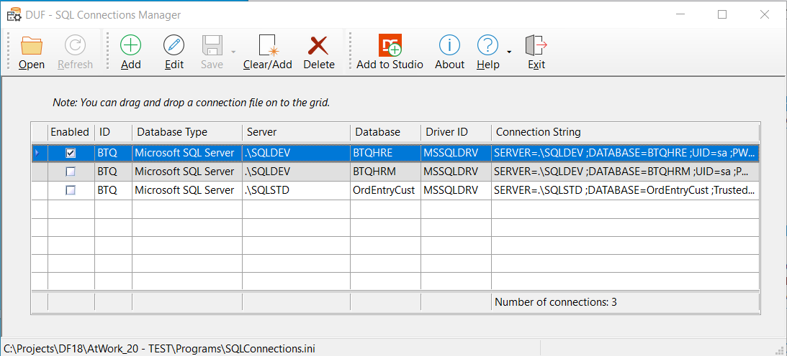
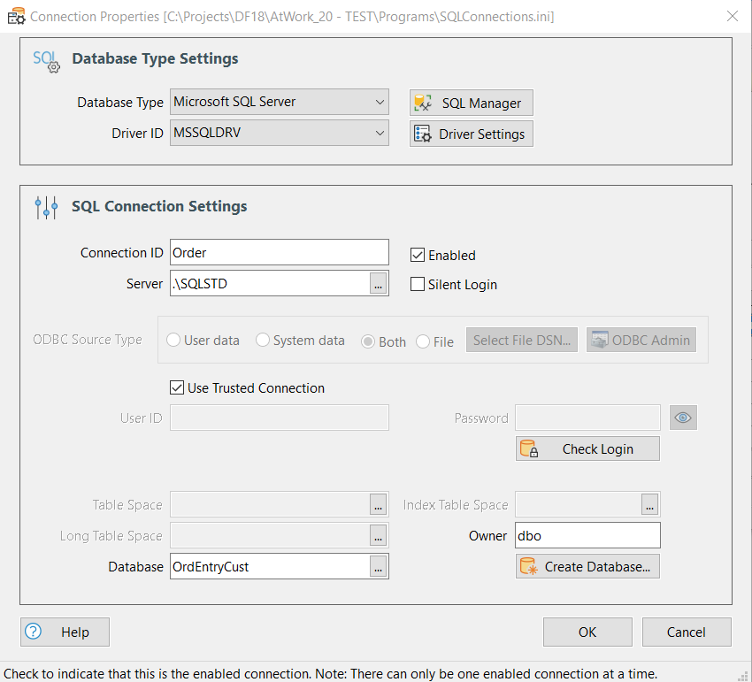

DUF SQL Connections Tool
Type: Tool/Program
Tool that is used to manage SQL connections (SQLConnections.ini files).
All connection settings for a SQL database are kept here. One SQLConnection.ini file per workspace (Programs folder). There can be multiple connections in the file but only one can be enabled/active at a time.
See Also: Overview of the DataFlex Database Update Framework
Studio's Tools menu settings:
Note: To include the SQL Connection Tool into the Studio's Tools menu it is advised to run the program and click the "Add to Studio" toolbar button.
Parameter: String s<application>
|
Parameter |
Description |
|
<application> |
The full path including the program name. The path will be parsed by the tool to read the workspace SQLConnections.ini file. |
Syntax
Configure Tools Menu (Studio)
|
Studio Call: |
"SQL Connections Manager" "C:\Projects\DbUpdateFramework\Programs\SQLConnections.exe" <application> |

Description
Use it to maintain SQL Connections. The tool can be added to the Studio's Tools menu as described in the First Time Usage. The Studio will then automatically open the correct SQLConnections.ini file for the current workspace.
All connection settings for a SQL database are kept here. One SQLConnection.ini file per workspace (Programs folder). There can be multiple connections in the file but only one can be enabled/active at a time.
You can drag & drop a SQLConnections.ini file - or a DataFlex 19 DFConnId.ini file on to the grid. If you choose to edit a DFConnId.ini file with this program and you select "Edit" of a record with an encrypted password you will get a warning and a question if you would like to change that password with this program. Most often you would reply 'No' as the two programs used different encryption/decryption algorithms, so please handle with care! If you answer "No", all other settings can be changed but the password won't be touched by the program.
Besides from the obvious incompatibility problem for passwords between this tool and Data Access Worldwide Managed connections tools, everything else is compatible. So you can edit a DFConnId.ini file and add more data to it - data that is exclusively used by the Database Update Framework - and both sets of tools will work just fine.
Note: The reason there are several more properties that can to be set with this tool compared to the DataFlex 19 "Managed Connections" is that The Database Update Framework is geared at making database changes and those functions need more properties than when just connecting to an SQL database.
You can change the number of columns shown in the grid. To remove a column; Left-click a column header and drag & drop it somewhere outside the grid. To add a column; right-click the header, select the "Field Chooser". Then left-click on a field and drag & drop it somewhere on the header where you want the new column. Finally you can re-arrange the column by left-clicking a column and drag & drop it to the new position. The new grid layout will automatically be saved to the registry. To restore the original settings; right-click anywhere on the header and select "Restore Layout".
Press F1 in the program to display this help text.
Edit a Connection

Depending on the Database Type selected different options will be enabled.
•Database Type: Can be any of the database types the framework supports; Microsoft SQL Server, MySQL, Oracle, IBM DB2 or PostgreSQL.
•SQL Manager: Press to start Microsoft SQL Manager Studio.
•Driver ID: Depending on the database type selected and if Mertech drivers have been installed, the comboform list data will vary.
•Driver Settings: Click to show a dialog with driver .int property settings. You will here also see exactly which driver .dll and .int file that is in use.
•Connection ID: This is the connection ID that appear in database table .int files with the format; "SERVER_NAME DFCONNID=MyConnID"
•Enabled checkbox: Although it can be practical to keep multiple connections - only one can be set to "Enabled" at any given time. This can e.g. be good when setting up an environment and/or running tests. If no connection has been set to "Enabled" you will get a warning when trying to save changes, because this means that no info will be read from the SQL ini-file when the framework is initialized.
•Server/DSN: Depending on the selected database type the label can either display as "Server" or "DSN". Either enter the name - if you know it - or by using the selection list (F4). Tip: If you are using Microsoft SQL Server and you are testing on the same machine as the MS SQL Server instance is running and you are using SQLEXPRESS you can enter e.g. ".\SQLEXPRESS". That will mean use the SQLEXPRESS instance of Microsoft SQL Server running on this machine. If you press [F4] and the selection list comes up empty for Microsoft SQL Server it probably is because the service hasn't been started. Type "Services" in Windows menu system to start Windows Services app. Type "SQL" to jump to the SQL Server services. Check that the "SQL Server Browser" service is started and set to "Automatic".
•Silent Login checkbox: Check to not have the database back-end's login popup dialog to show if the login is unsuccessful.
•Show ODBC Data Source: Only available if the ODBC_DRV has been selected. Depending on the radio button that is selected the "Server/DSN" selection list shows different values.
•Use Trusted Connection checkbox: (Windows Authentication) When selected, SQL Server uses integrated login (Windows login information) security to establish connections using this data source, regardless of the current login security mode at the server.
•User ID: Enter the user name to use for authentication to login to the database.
•Password: Enter the password for the user name. The password will automatically be encrypted & decrypted when writing/reading from the ini file. Of Special Note: If the cConnection class is used with DataFlex 19 or later and such an .ini file is edited with this program you will get a question if you would like the program to "touch" the password or not. If you answer No, the ini-file will keep working with the DataFlex tools. You should probably never try to change the password with this program for a DFConnid.ini file as the two programs uses different encryption/decryption algorithms.
•Eye button: Click to reveal the password. (Toggles the mode of the password windows.)
•Check Login button: You should always use this button when adding a new SQL Connection to ensure that the entered credentials are correct.
•(Base) Table Space: Sets the name of the table space where the data will be stored. Applicable for IBM DB2, Oracle and PostgreSQL databases. Table spaces allow you to assign a physical location to logical objects (tables). They can be used to improve performance or to increase the page size, thus increasing the maximum size of a record that can be stored in the table space. You can specify what table space must be used to store table, index or long data. The index and long data table space will only be set when the table tables pace is also set.
•Index Table Space: To set the name of the table space where indexes will be stored. Only applicable for IBM DB2, Oracle and PostgreSQL databases.
•Long Table Space: Only applicable for IBM DB2 databases.
•Schema: The name of the schema the table belongs to. A schema is a collection of names or objects. A schema can contain tables, views, and triggers. Schemas provide a logical classification of objects in the database. It can have a slightly different meaning depending on the selected database type. Please consult a database manager to ensure the correct value is selected. Applicable for IBM DB2, Oracle and PostgreSQL databases. For IBM DB2 not specifying a schema will result in the user name being used. Microsoft SQL Server has a completely different approach to security and privileges and uses owners instead. If you try to connect to an Oracle server and you get an error like e.g. "ORA-00942: table or view does not exist", you probably don't have enough credentials. Try instead to use e.g. "sys" as User ID, or enter the schema name manually.
•Owner: For Microsoft SQL Server only. Note: This is the same field as 'Schema' but the label changes to 'Owner' if 'Microsoft SQL Server' has been selected. The owner name to use within the database where the tables must be placed. If you want to specify an owner of the table that will be converted you can do so, not specifying an owner will result in the default owner being used. The suggested owner name to use is "dbo".
•Database: The name of the database to connect to. The database must already exist - except for Microsoft SQL Server where the database can be created by the framework by using the function "SQLDatabaseCreate" in the cDbUpdateHandler's OnPreUpdate event.
•Create Database: Click to show dialog where you can create a new MS-SQL database and also select the collation to be used.
Next Topic